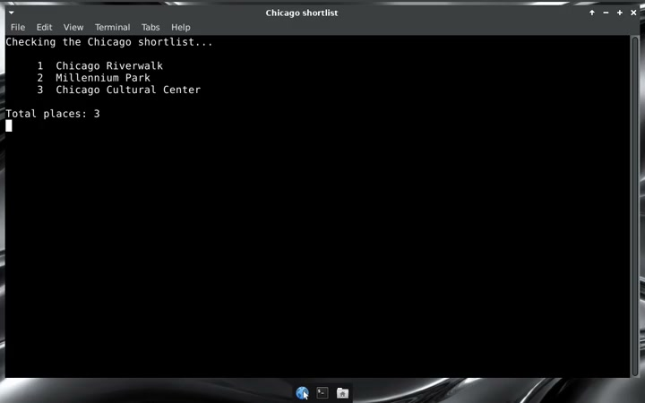

Chicago
Along the Riverwalk.
The river at street level
Before the Riverwalk.
01Chicago Riverwalk
02Millennium Park
03Chicago Cultural Center
Three places on the shortlist.
Inside the sandbox VM
It started with
a question.
KronOS Agent